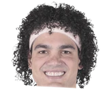
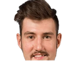

Jason Anderson:Matthew Dellavedova on De'Aaron Fox:
“He’s a lot stronger than I realized. He’s lean and obviously everyone knows how fast he is, but he’s really strong. He’s got a very solid base and ... I didn’t know he was that strong.”

3 quotes from Matthew Dellavedova about 4 other people around the NBA, newest first. Each one links to its original source.
What NBA players and coaches have said about Matthew Dellavedova →

Anderson Varejao1 quote
Sergey Karasev1 quoteJason Anderson:Matthew Dellavedova on De'Aaron Fox:
“He’s a lot stronger than I realized. He’s lean and obviously everyone knows how fast he is, but he’s really strong. He’s got a very solid base and ... I didn’t know he was that strong.”
Dellavedova told ESPN.com.
“He just showed out [on the ball handler] and I just needed to go under. So, it wasn't really anything. I mean, you know how the media can get, right? It's obviously more crazy with anything involving LeBron.”
Matthew Dellavedova:
“In my second column,I talked about how Andy Varejao (pictured) took Sergey Karasev and I to a Brazilian restaurant. The other people were joking that we would get sick of it because he likes to go there so much. We thought they were joking about that. I think we have eaten there about three or four more times since then,but Sergey and I still aren’t sick of it, it’s great.”